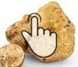
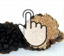
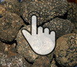
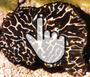

The types of truffles and harvesting periods
Like any self-respecting treasure, truffles need expert miners who extracted it with their experience with care, ready to be used in savory recipes.
The nose looks like a tuber the size and color varies depending on the species: there are in fact many qualities including the prized black or white truffles, truffle hamate, the white truffle, black truffle d 'winter, summer truffle or scorzone, all present in Abruzzo .
As expected, the periods of collection of truffles are variable.
According to the Regional Law n. 66 of 21/12/2012 are certain times when the truffle let stand for their production, in order to keep alive our pristine land. Woman In direct correlation with the collection period (and the size), the price of the truffle varies depending on the size and type of the collection, so we ask our customers to contact us whenever you need to place an order because the price varies according to many of its characteristics.
As expected, the periods of collection of truffles are variable.
According to the Regional Law n. 66 of 21/12/2012 are certain times when the truffle let stand for their production, in order to keep alive our pristine land. Woman In direct correlation with the collection period (and the size), the price of the truffle varies depending on the size and type of the collection, so we ask our customers to contact us whenever you need to place an order because the price varies according to many of its characteristics.

White Truffle
Tuber Magnatum Pico
Features: outside has a smooth yellow ocher or olive yellow. The inner flesh is yellowish white with brownish shades that vary...

Black Truffle, Scorzone
Tuber aestivum
Features: peridot has a black color, with protruding warts, large, making it typical. The Glebe is a light brown color with numerous...

Smooth black truffle
Tuber Melanosporum nero pregiato
Features: peridot is reddish brown, sometimes with rust-colored spots, it has slight warts. The gleba is whitish brown...

Hooked Truffle, Scorzone invernale
Tartufo nero, Tuber Uncinatum
Features: Tuber aestivum is very similar to warts but has less large, and the glebe is much darker, the flavor is stronger and...